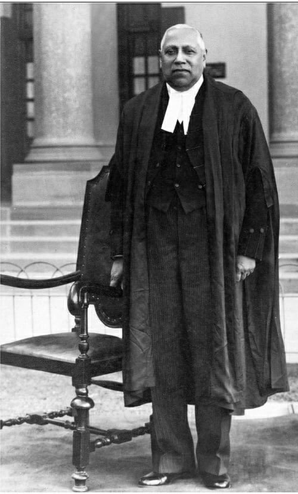

The inspiring legacy behind our mission to empower youth and women through vocational skill development

Justice Mehr Chand Mahajan
23 Dec 1889 - 11 Apr 1967
3rd Chief Justice of IndiaMehr Chand Mahajan was born in 1889 at Tika Nagrota in the Kangra district of Punjab, British India (now in Himachal Pradesh). His father, Lala Brij Lal, was an advocate who later established a reputed legal practice at Dharamsala. After completing middle school, Mahajan went on to study at the Government College, Lahore, graduating in 1910. He initially enrolled for M.Sc. Chemistry, but switched to law following persuasion from his father. He earned his LL.B. degree in 1912.
Mehr Chand Mahajan started his career as a lawyer in 1913 in Dharamsala, where he spent a year practising. He spent the next four years (1914-1918) as a lawyer in Gurdaspur. He then practised law in Lahore from 1918 to 1943. During his time there, he served as President of the High Court Bar Association of Lahore from 1938 to 1943.
Mahajan visited Kashmir on invitation of the Maharani in September 1947 and was asked to be the Prime Minister of Jammu and Kashmir, which he accepted. On 15 October 1947, Mahajan was appointed the Prime Minister of Jammu & Kashmir and played a pivotal role in the accession of the state to India. Jammu & Kashmir acceded to India in October 1947 and Mahajan thus became the 1st Prime Minister of the Indian state of Jammu and Kashmir, serving in that post until 5 March 1948.
Mahajan took office as the 3rd Chief Justice of India on 4 January 1954. He was the head of India's judicial system for almost a year, until his retirement on 22 December 1954. Before becoming Chief Justice, he served as one of the first Judges of the Supreme Court of independent India from 4 October 1948 to 3 January 1954.
A timeline of service spanning law, politics, and the highest judiciary
Graduated in law from Government College, Lahore
Started practising law in Dharamsala, his hometown
Led the prestigious bar association until 1943
Elevated to the bench of Lahore High Court
Played a pivotal role in J&K's accession to India
One of the first Judges of the Supreme Court of independent India
Headed the nation's judicial system until retirement
A lifetime of distinguished service across law, education, and governance
Director, Punjab National Bank
President, D.A.V. College Managing Committee
Fellow and Syndic, Punjab University
All India Fruit Products Association, Bombay Session
Member, R.I.N. Mutiny Commission
Punjab Boundary Commission
Dewan, Jammu and Kashmir State
Syndic, East Punjab University
Constitutional Adviser to Maharaja of Bikaner
Honorary LL.D. from Punjab University
Member, Fruit Development Board, Punjab
Commission on Belgaum (Karnataka-Maharashtra dispute)
Carrying forward the legacy through empowerment and skill development
Rooted in the core purpose of women empowerment, the MCM Charitable Trust strives to tap into the talents of poor, marginalised women as a means of making them economically independent and skilled.
In partnership with CII, the Trust operates the CII-MCM Multi-Skill Training Institute in Dharamshala, providing vocational training in stitching, beauty, IT, accounting, JCB operation, and electrical trades.
Beyond skills, the Trust runs hygiene programs, destitute girl marriage assistance, cow donation drives, and other social welfare initiatives across Himachal Pradesh.
VPO Khaniara, Dharamshala, District Kangra, Himachal Pradesh - 176218. The same town where Justice Mahajan began his illustrious legal career in 1913.
Join the CII-MCM Multi-Skill Training Institute and learn from the best
Explore Programs